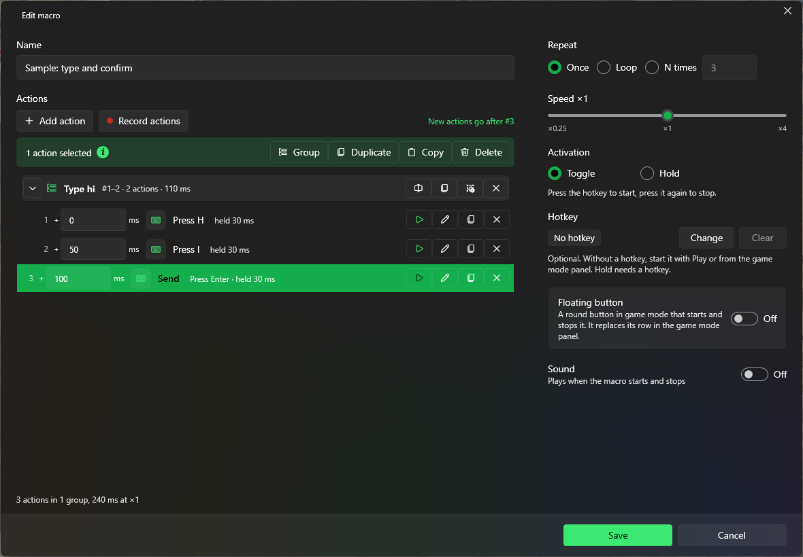

A macro plays back a list of actions. Create one with Record macro or New macro on the Macros page.
Record
Select Record macro. Choose whether to Record mouse movement.
Select Start recording or press the Record hotkey (F8 by default). PuppyMacro hides; after a 3-second countdown, switch to the window to record. Clicks during the countdown are not recorded.
Do what you want to repeat, then press the Record hotkey again or select Stop. The macro opens in the editor.
Edit

Every action has its own delay before it starts. Groups and names keep long macros readable.
Add action adds a step; Record actions records more steps and inserts them into the macro.
Actions: Press key, Key down, Key up, Click (single or double), Mouse button down, Mouse button up, Move to (instantly or smoothly, with Pick on screen), Scroll, Paste text, and recorded mouse paths.
Press key and Click can repeat a number of times, with a pause between.
Test action (▶ on an action) plays that action once, and Test does the same in the action's window, also before you save it. PuppyMacro hides, the window that was behind it gets the focus, the action plays there (right away, without its delay, at ×1) and PuppyMacro comes back.
Every action can have a Name (optional), set in its edit window. The list shows it in bold, before the description of the action.
New actions go after the selected action (in its group), after the selected group, or at the end.
The list of actions is on the left and takes the whole height of the window; Repeat, Speed, Activation, Hotkey, Floating button and Sound are on the right. The window can be resized and PuppyMacro keeps the size for the next time.
Repeat: Once, Loop or N times. Speed: from ×0.25 to ×4.
Activation, Hotkey, Floating button and Sound work as for loops. Without a hotkey, start the macro with Play.
Select, move and copy actions
Click an action to select it. Ctrl+click and Shift+click select more, Ctrl+A selects them all. Selecting a group's header selects the whole group.
Hover the blue i next to the text of the bar above the list to see these shortcuts.
The bar above the list works on the selection: Group (Ctrl+G), Duplicate (Ctrl+D), Copy (Ctrl+C) and Delete (Delete). After a copy, Paste (Ctrl+V) inserts the actions where new actions go, also in another macro, until PuppyMacro closes.
Drag the selected actions to move them. The blue line shows where they go: indented, they go into that group; full width, they go outside groups. Dropping on the top half of a group's header puts them before the group, on the bottom half into the group, at its start (at its end when the group is collapsed). Below the last action, they go to the end of the macro.
Alt+Up / Alt+Down move the selection one step. At the edge of a group, the actions leave it or enter it; a collapsed group is skipped.
Groups
Select actions and choose Group, then give the group a name. Actions from different places are put together where the first one was.
The group's header shows its name, its actions (for example #4–8), how many they are and how long they take. The arrow collapses or expands the group.
On the header: Rename group, Duplicate group, Ungroup (the actions stay where they are) and Remove group (removes the group and its actions). Drag the header to move the whole group.
A group cannot go into another group. Groups only organize the list: the macro plays its actions in order, grouped or not.